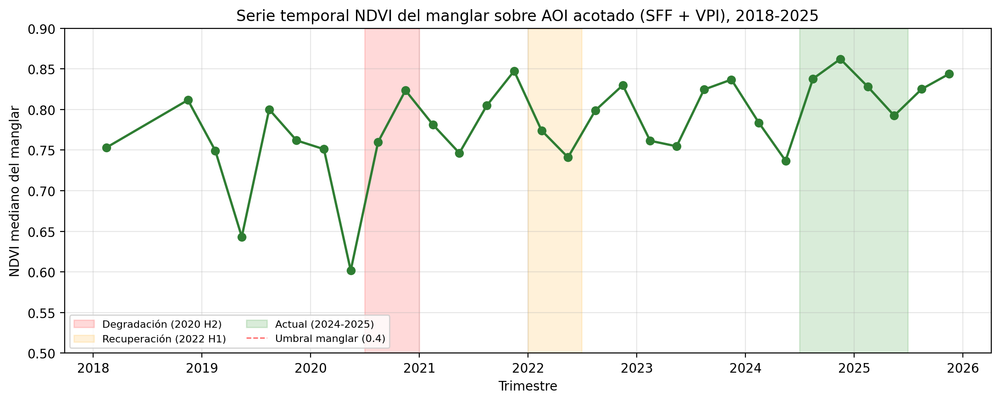
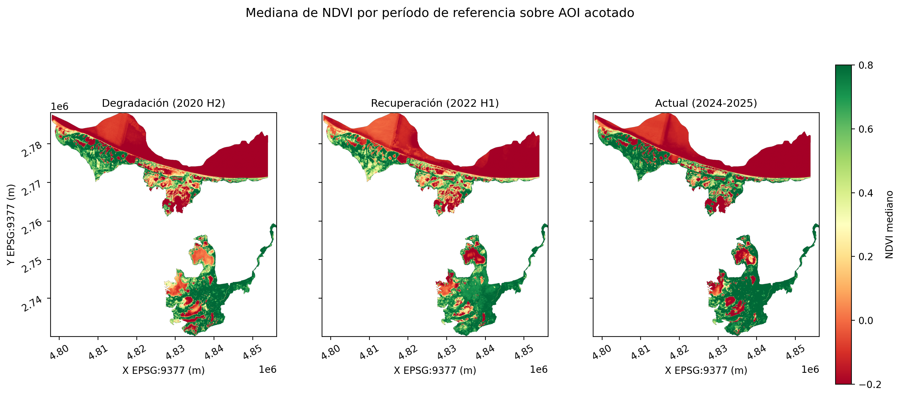
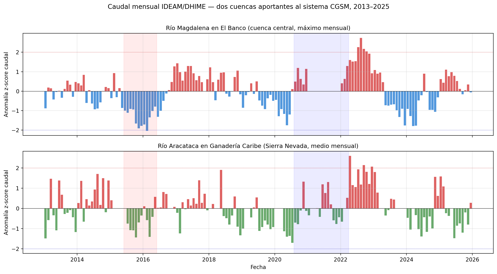
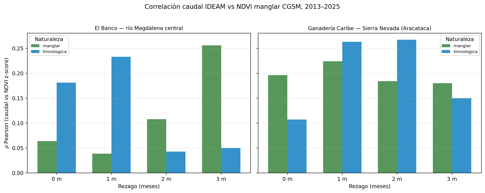

Manglar protegido hoy
4.037 ha
Área protegida total
835 km²
Inundado durante La Niña 2020
59 km²
Vínculo caudal río – manglar
+0.26
Años de monitoreo continuo
13


Fragmentos de manglar en 2020
79
Fragmentos en 2022
38
Fragmentos hoy (2024-25)
15
Consolidación de los fragmentos
+71 %
Validación con cartografía oficial
✓
| Periodo | Parches | Área (ha) | Área media (ha) | MSI | NND (km) | |
|---|---|---|---|---|---|---|
| 0 | degradacion | 79 | 12425.63 | 157.29 | 0.51 | 1.10 |
| 1 | recuperacion | 38 | 8650.75 | 227.65 | 1.01 | 1.99 |
| 2 | actual | 15 | 4037.02 | 269.13 | 1.46 | 2.39 |
| Métrica | INVEMAR 1:25.000 | ESA WorldCover v200 |
|---|---|---|
| F1-score | 0,583 | 0,548 |
| Precision | 0,811 | 0,768 |
| Recall | 0,454 | 0,426 |
| Specificity | 0,954 | 0,944 |

Caudal típico río Magdalena
3.750 m³/s
Pico extremo durante La Niña
5.921 m³/s
Vínculo La Niña – manglar
+0,20
Inundaciones históricas registradas
16



| Forzamiento | Lag 0 | Lag 1 | Lag 2 | Lag 3 | |
|---|---|---|---|---|---|
| 0 | ERA5 precip local | -0.081 | -0.081 | -0.123 | -0.020 |
| 1 | ENSO ONI global | 0.027 | -0.007 | -0.039 | -0.070 |
| 2 | ENSO SOI global | 0.143 | 0.198 | 0.146 | 0.058 |
| 3 | Caudal El Banco | 0.064 | 0.039 | 0.108 | 0.256 |
| 4 | Caudal Aracataca | 0.196 | 0.224 | 0.184 | 0.180 |
| 5 | CHIRPS Magdalena | 0.075 | 0.170 | 0.097 | 0.252 |
Cuadernos en Python
15
Cuadernos en R
4
Cuadernos en Julia
3
Pruebas cruzadas entre lenguajes
4

| # | Análisis | Lenguajes | Convergencia |
|---|---|---|---|
| 1 | ENSO ONI/SOI vs NDVI | Python ↔︎ R | 8 filas idénticas |
| 2 | Caudal IDEAM vs NDVI | Python ↔︎ R | 16 filas idénticas |
| 3 | Caudal-NDVI manglar | Python = R = Julia | 4 rezagos idénticos |
| 4 | Predicados DE-9IM | Python ↔︎ Julia | 17/17/15 parches |
- Python: GEE, SamGeo, xarray, validación
- R: bfast, series ecohidrológicas, índices climáticos (
tidyverse) - Julia: fragmentación, predicados DE-9IM (
LibGEOS.jl)
Trabajo final de la asignatura Programación en SIG, Maestría en Geomática, Universidad Nacional de Colombia, semestre 2026-1.
- Autora: Lina María Quintero Fonseca
- Docente: Alexys H. Rodríguez-Avellaneda Ph.D.
- Repositorio: github.com/linaq11/proyecto-cgsm-curso
- Informe completo: HTML · PDF
¿Cómo ha variado la cobertura, la fragmentación y el vigor del manglar de la Ciénaga Grande de Santa Marta entre 2013 y 2025, y qué evidencia cuantitativa permite atribuir las perturbaciones detectadas a forzamientos climáticos asociados al evento La Niña 2020–2021?
- Sentinel-2 SR Harmonized (ESA): 789 imágenes 2018–2025
- Landsat 8/9 Collection 2 (USGS-NASA): 345 registros 2013–2017
- Sentinel-1 SAR (ESA): inundación bajo dosel septiembre 2020
- SRTM v3 (NASA): restricción geofísica
- Global Flood Database (Dartmouth Flood Observatory): 16 eventos históricos
- JRC Global Surface Water: dinámica hídrica 1984–2021
- ESA WorldCover v200 (Zanaga et al., 2022): validación cartográfica
- INVEMAR 1:25.000 (2020): cartografía oficial colombiana
- IDEAM/DHIME: caudal río Magdalena (El Banco) y río Aracataca (Ganadería Caribe)
- CHIRPS v2.0 (Funk et al., 2015): precipitación regional
- NOAA CPC: índices ENSO ONI y SOI
- ERA5-Land (Hersbach et al., 2020): forzamiento climático local
Python 3.12, R 4.3.3, Julia 1.11.3, Quarto 1.4, Docker, GEE, SamGeo, bfast, LibGEOS, tidyverse, DataFrames.jl, folium.